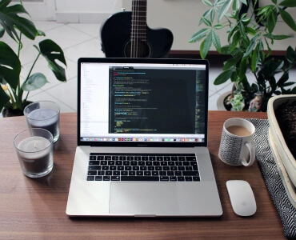
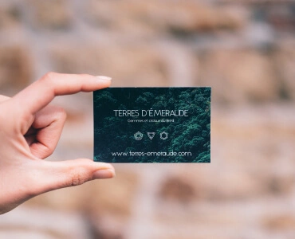

Контентні зображення
Зображення, які і є контентом сайту У більшості випадків це растрові зображення (фотографії) (JPG/PNG -> WEBP) Усі контентні зображення виводяться тегом IMG
 Іконки
Невеликі прості зображення, які підсилюють ефект тексту, або самостійно несуть певну інформацію. У більшості випадків це векторні зображення. (SVG)Іконки можуть інтегруватись як тегом IMG так і через CSS (background та інші().
Елементи дизайну
Веркторні, або растрові зображення (можливо з прозорістю) які є частиною дизайну сайту. Можуть бути як векторні так і растрові (SVG, JPG/PNG -> WEBP) Елементи дизайну, частіше всього, інтегруються через CSS (background та інші)